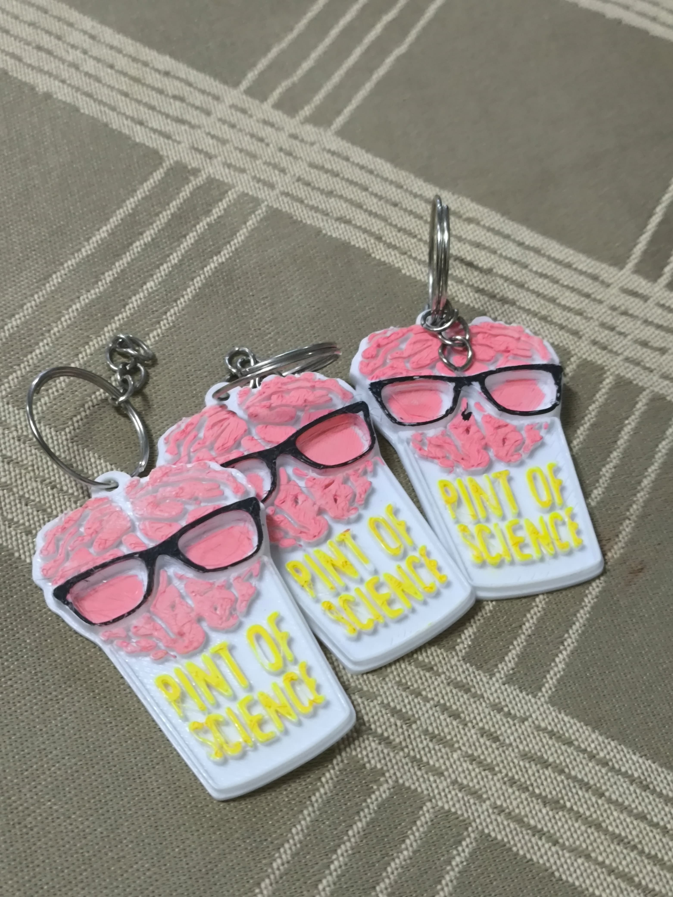

O que é PINT OF SCIENCE?
O Pint of Science é um festival internacional que leva cientistas para bares e cafés, com o objetivo de compartilhar ciência de forma simples e acessível ao público. Acontece anualmente em vários países, incluindo o Brasil.

Quer saber o que rolou durante o evento? Clique no botão abaixo para acessar fotos, vídeos e os principais destaques.
O Pint of Science é um festival internacional que leva cientistas para bares e cafés, com o objetivo de compartilhar ciência de forma simples e acessível ao público. Acontece anualmente em vários países, incluindo o Brasil.
A noite foi repleta de conhecimento, trocas e momentos únicos. Veja como foi a nossa experiência assistindo o evento!
